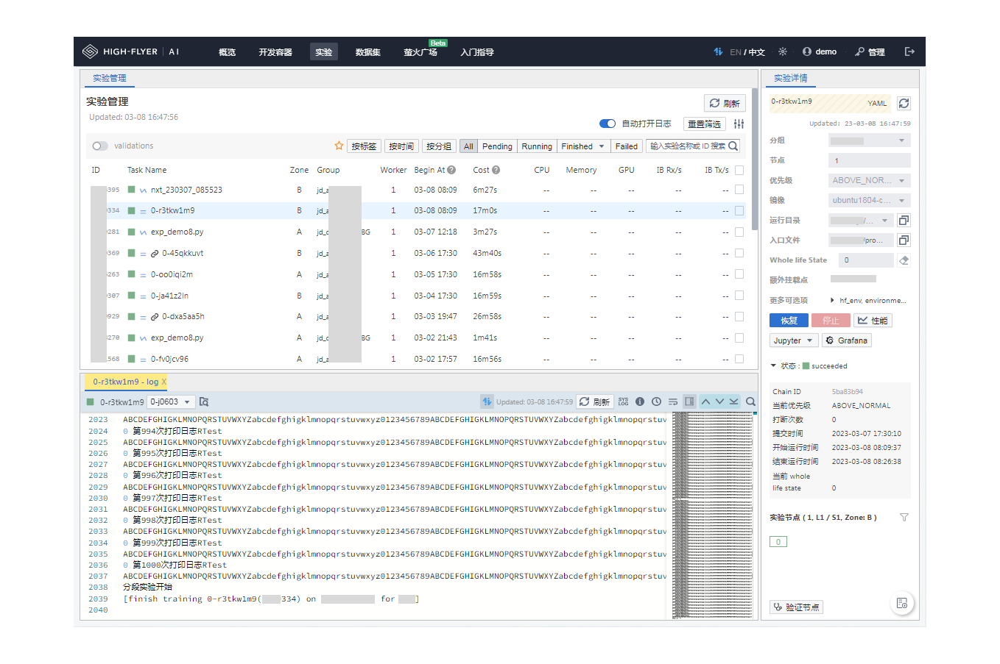

Studio¶


介绍¶
HAI Platform Studio 是为 HAI Platform 提供的用户界面，主要的功能包括但不限于：
管理和启动基于 JupyterLab 的开发容器，配合 Jupyter 插件，可以进行代码调试或任务提交。
管理提交的实验，支持实验的实时监控、日志分析和实验状态管理。
另外本项目还集成了讨论区、实验性能监控、实验调度管理等功能。
另外，本项目 /monitor 子应用集成了一定的监控和管理能力，包括：
用户及实验管理：创建用户；修改用户分组、Quota；管理用户开发容器和实验；
节点管理：查看分组节点以及各个节点的详细信息。

调试与部署¶
在调试前，请先确保已经成功部署了 HAI Platform 后端。
项目架构介绍¶
本项目主要包含了一个基于 React 的 Studio 前端项目，一个基于 Vue.js 的 Monitor 页面和一个基于 Node.js 的后端接入层。
目录结构：
├── apps
│ ├── studio：studio 用户实验管理页面
│ └── monitor：监控管理页面
├── packages
│ ├── studio-pages：studio 中的实验列表、日志、实验详情等核心组件，这部分在 jupyter 插件中进行了复用。
│ ├── studio-schemas：studio 中用到的一些 Typescript Schema
│ └── studio-toolkit：studio 中用到的一些工具函数
├── servers
│ └── ailab-server：基于 Node.js 的接入层
└── shared
├── client-ailab-server：接入层 http 请求的管理实例
├── client-api-server：http 请求的管理实例
├── i18n：语言包
├── icons：通用 icons 集合
├── io-frontier：基于 websocket 的长链接管理库
├── shared：全局通用的 schema、工具函数等
└── x-editor：封装了二次开发的 markdown 编辑器 @hai-platform/vditor
本地调试¶
1. 填写 .devrc 配置文件¶
为了方便定义我们调试中的依赖项目，我们定义了一个 .devrc 文件，它基于 JSON5 规范，我们可以在其中定义本地开发的配置内容。
.devrc 文件中定义了我们调试开发中需要用到的后端服务、数据库等配置，其中标注 [必填] 的为必须要填写的项目。
另外，我们项目中默认可以使用一些第三方依赖：
使用 Countly 进行监控上报，可以通过配置包含
countly的字段进行开启。使用 Meilisearch 提供讨论区模块的搜索服务，可以通过配置
MEILI_SEARCH相关字段开启。
注意：在生产环境中，可以通过环境变量指定相关变量，相关变量的全大写格式即为环境变量的 key
2. 本地调试¶
环境依赖：
node >= 18
pnpm >= 7.24.0
先执行依赖安装等一些初始化操作：
在终端执行：
pnpm first
开启 ailab-server 接入层的调试：
cd servers/ailab-server/
pnpm start
开启 studio 前端页面的调试：
cd apps/studio/
pnpm start
开启 monitor 前端页面的调试：
cd apps/monitor/
pnpm start
此时，应该能够看到提示打开 URL，在浏览器中打开即可调试。
3. 扩展功能¶
在当前的开源版本中，部分功能我们并未提供完整的自定义实现，这部分功能如果需要，可以进行二次实现，同时为了方便实现，我们对这些功能的入口和 schema 进行了保留。
模块：
Fetion: Fetion 可以用于处理告警信息，可以通过自定义
CustomFetion的方式覆盖默认行为。Statistics: Statistics 文件包含了我们的一些用户统计数据的接口，可以自行实现相关函数完成统计功能。
PathGuide 组件: 由于使用场景不同，这个组件的展示默认被屏蔽，这里可以罗列一些实际使用中可能有用的路径，并且将其展示给用户。
讨论区通知模块：我们在项目中携带了一个讨论区模块，不过要完整地使用其通知能力，还需要自行填入数据库模板，我们在这里 给出了一个示例内容，这部分模板需要插入到
frontend.topic_notification_template中。
通用能力：
i18n 多语言: 我们对部分重点模块支持中文、英文双语，可以在这里补充更多的国际化支持。
i18n Brand: 这里指定了我们的一些应用名称等内容，可以自行更改。
Shared Public: 这里指定了我们通用的配置，包括路径、节点信息等配置以及相关默认值，可以按需完善。
注意：在训练中，一般我们相同分组的节点需要保证同属 GPU/GPU 类型，所以我们可以简单地通过分组来判断当前分组的节点类型，在 Group 这里提供了快速判断的相关函数，这部分需要根据实际情况自行修改。
线上部署¶
运行环境和配置要求¶
最低 1 核 4G 内存的物理机、虚拟机或容器环境
Linux/Unix 环境
我们建议两种部署方式：
通过 k8s 独立部署后端，并通过 nginx 独立部署 studio 和 monitor，比较适合大型使用场景
将所有内容打包成一个二进制文件，直接启动，比较适合小型场景
使用 k8s 部署¶
部署 ailab-server 接入层：
使用项目内的示例
Dockerfile或自行编写，打包成一个镜像推送到内部镜像仓库。编写
deployment.yaml或者使用helm进行部署。
部署 studio、monitor：
分别在项目目录下执行
pnpm build，会在 dist 目录下得到项目产物。需要注意的是，采用独立部署的方案，需要在
apps/studio/vite.config.mjs中按照注释提示更改createHtmlPlugin。
将 studio 和 monitor 的产物，放入 nginx 的静态目录即可。
注意：由于这部分内容过于定制化，我们无法给出通用代码，这部分如果有相关需求，可以联系我们获取更多帮助。
使用二进制运行¶
二进制打包命令：
pnpm first
pnpm run bundle:hai
脚本执行完成后，会在 ailab-server-dist/binary 目录下生成我们的目标二进制文件。
注意：默认仅打包 node18-linux-x64 平台产物，如果需要其他平台产物，请在 servers/ailab-server/package.json 中进行修改。
之后可以在 linux 环境下启动我们的二进制打包文件，示例：
export BFF_ADMIN_TOKEN=xxxxxxxx
# ... 这里请将配置补充完成
./hai-studio --log-dir ./logs
在二进制文件中，studio 前端页面的路径为根路径 /，monitor 的路径为 /monitor。
更多支持¶
在当前地开源的版本中，出于去除敏感信息考虑，我们对一些功能进行了裁剪，HAI Platform 包含了更多的监控、报表以及各类高级运维功能尚未开源。
你可以自行二次开发，或者联系我们获取更多支持：包括但不限于完整版本的试用、私有部署等。
贡献代码¶
在二次开发或者提交代码前，请先阅读上文调试与部署部分。
另外，本项目并未开源所有可用功能，如果你有大范围的定制或二次开发需求，可以在这里确认是否能够获取更多帮助。
提交代码¶
我们针对部分模块，设置了一些测试用例，请保证提交的代码测试用例运行正常：
pnpm test
您可以通过提交 Pull Request 的方式提交新的代码合并请求。